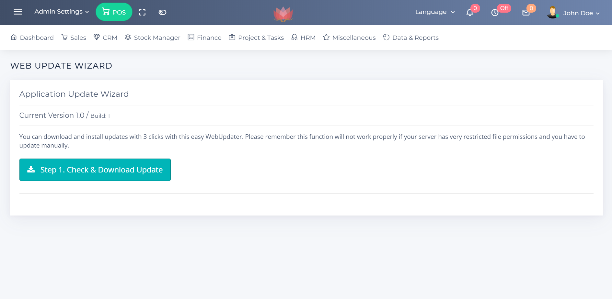

A. Auto Update
1. Please go to Admin Settings>Advanced Settings>Web Update Wizard
2. Click on Download Update
3. Click on Install Update
4. Click on Database Update

1. Please go to Admin Settings>Advanced Settings>Web Update Wizard
2. Click on Download Update
3. Click on Install Update
4. Click on Database Update